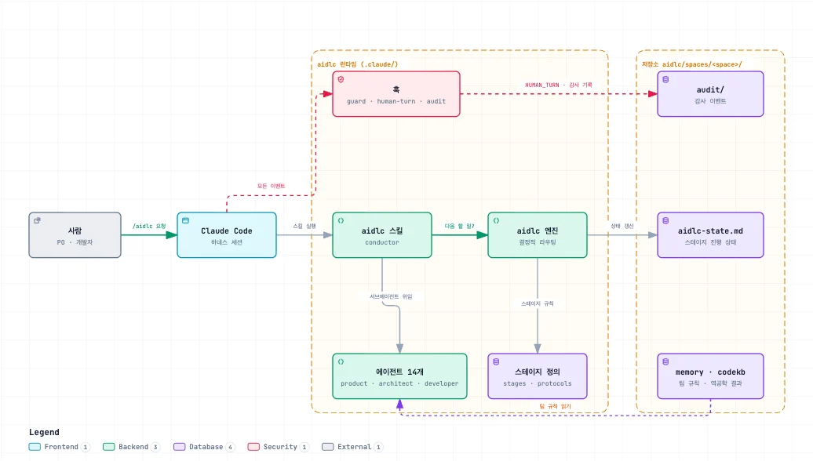
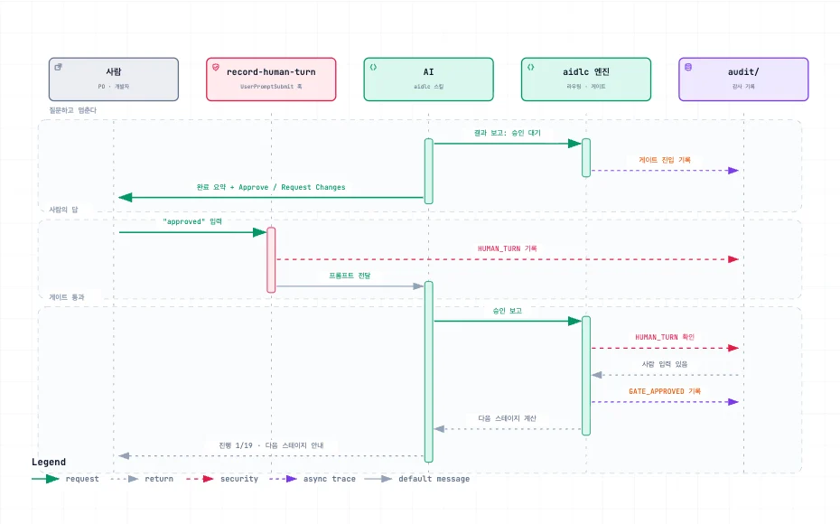
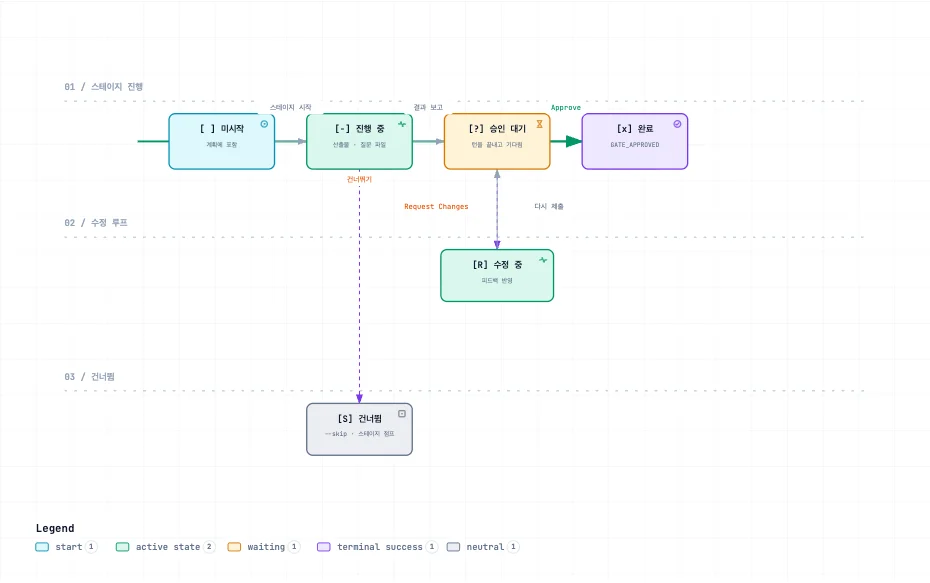

세 단계, 그리고 그것을 돌리는 도구
방법론으로서 AI-DLC는 Inception, Construction, Operations 세 단계다. 그것을 실제로 돌리는 AWS의 오픈소스 aidlc-workflows는 두 세대가 있다. v1은 규칙 파일을 복사해 쓰는 3단계 14스테이지, 2026년 6월 나온 v2는 엔진을 설치하는 5단계 33스테이지다. 블로그와 워크숍 자료 대부분은 v1을 기준으로 쓰였다.
개념 모델: 세 단계
화이트페이퍼가 정의한 단계다. 각 단계의 산출물은 다음 단계의 컨텍스트가 되고 빨간 마름모마다 사람이 승인한다. 운영에서 얻은 결과는 다음 Inception의 입력으로 되돌아간다.
Inception
구상 · 무엇을 왜 만드나 · 의식: Mob Elaboration
- AI가 질문해 의도의 모호함을 줄인다
- 사용자 스토리와 수용 기준
- NFR 정의, 위험 설명(위험 레지스터와 맞춤)
- Intent로 추적되는 측정 지표
- Unit 분해와 Bolt 제안
- PRFAQ (선택)
Construction
구축 · 어떻게 만드나 · 의식: Mob Construction
- 도메인 설계: 기술과 무관한 비즈니스 로직
- 논리 설계: NFR 패턴과 ADR
- 코드 생성: 서비스 매핑
- 자동 테스트: 기능·보안·성능
- Unit마다 Bolt로 반복
Operations
운영 · 내보내고 지켜보기
- 배포 유닛 패키징과 롤아웃
- 메트릭·로그·트레이스 분석
- 이상 탐지, SLA 위반 예측
- 런북 기반 조치 제안 → 사람 승인 후 실행
- 결과를 다음 Inception의 컨텍스트로
단계마다 사람이 승인하는 것
| 단계 | AI가 하는 일 | 사람이 결정하는 것 |
|---|---|---|
| Inception | 질문, 스토리·NFR·위험 초안, 응집도 높은 스토리를 Unit으로 묶기 | 스토리·NFR·위험이 맞는가, Unit 경계가 맞는가(PO), 범위에서 빠진 규제·보안은 없나 |
| Construction | 설계 옵션 제시, 모델링, 코드·테스트 생성, 테스트 실행과 수정안 | 도메인 모델의 엣지 케이스, 논리 설계의 트레이드오프, 생성 코드와 테스트 시나리오, 수정안 적용 |
| Operations | 패키징, 이상 탐지, 확장·튜닝·장애 격리 제안 | 배포 구성과 롤아웃 시작, 완화 조치 실행 |
Dedicatted 가이드: "Inception을 서두르면 Construction은 엉뚱한 것을 위한 자신만만하고 잘 테스트된 코드를 만든다." Inception은 같은 방, 최소한 같은 시간대에서 하고 Construction·Operations는 분산 작업을 더 잘 견딘다.
Inception이 잘 됐는지는 이렇게 확인한다. 모든 Unit이 Intent로 추적된다. AI의 질문에 그 세션 안에서 답한다. 결정이 회의록이 아니라 저장소에 남는다. 수용 기준이 테스트를 만들 수 있을 만큼 구체적이다. 반대로 한 사람이 혼자 상세화하고 나머지가 나중에 검토하거나, Unit을 에픽 크기로 잡거나, 기존 코드를 주지 않아 존재하지 않는 시스템을 설계하면 실패한다.
Construction 안의 순서
- 도메인 설계인프라를 빼고 비즈니스 로직만 모델링한다. 엔티티, 값 객체, 애그리거트, 도메인 이벤트, 리포지토리. 개발자 검토 예: 구매 이력이 없는 신규 고객은 어떻게 처리하나.
- 논리 설계NFR을 패턴으로 바꾼다. 이벤트 주도, CQRS, 서킷 브레이커 같은 선택과 그 이유를 ADR로 남긴다. 트레이드오프 승인 예: Lambda는 받아들이되 저장소는 DynamoDB로 바꾼다.
- 코드 생성논리 설계를 실제 서비스와 구성에 매핑해 코드와 단위 테스트를 만든다. 코드·시나리오 검토
- 자동 테스트AI가 기능·보안·성능 테스트를 돌리고 실패를 코드·구성·의존성 변경과 연결해 수정안을 낸다. 수정안 승인 필요하면 다시 돌린다.
기존 시스템이면 1번 앞에 하나가 더 붙는다. AI가 코드를 정적 모델(컴포넌트, 책임, 관계)과 동적 모델(주요 유스케이스의 상호작용)로 끌어올리고 개발자와 PM이 그 모델을 고친 뒤에 설계를 시작한다.
aidlc-workflows의 두 세대
github.com/awslabs/aidlc-workflows, MIT-0. 2026-11-13 기준 안정판 v2.11.4. v1은 v1 브랜치(1.0.1)에서 유지보수만 한다.
| v1 · 규칙 파일 복사형 | v2 · 엔진 설치형 | |
|---|---|---|
| 형태 | 마크다운 규칙 파일. 진입 규칙 하나가 상세 규칙을 필요할 때 읽게 한다 | aidlc 네이티브 바이너리 + 하네스별 스킬·훅·에이전트 14개 |
| 시작 | 채팅에 Using AI-DLC, … | /aidlc … (Codex는 $aidlc) |
| 단계 | 3단계 14스테이지. Operations는 비어 있음 | 5단계 33스테이지, 스코프 11종 |
| 흐름 강제 | 모델이 규칙을 따르기를 기대한다 | 결정적 엔진이 다음 스테이지를 정하고 훅이 사람의 실제 입력을 확인한다 |
| 산출물 | aidlc-docs/ | aidlc/spaces/<space>/intents/<YYMMDD>-<label>/ |
| 지원 도구 | Kiro, Amazon Q Developer, Cursor, Cline, Claude Code, Copilot, Codex | Claude Code, Kiro, Codex CLI, Cursor, opencode, Copilot. Q Developer·Cline은 목록에 없다 |
| 확장 | 보안·속성 기반 테스트·복원력 extensions (opt-in) | 플러그인, 센서, devsecops·compliance 에이전트, 학습하는 규칙 계층(memory) |
v2를 만든 이유는 v2 명세에 나온다. v1의 스테이지 정의가 "너무 독단적"이었다. 예를 들어 빌드와 테스트가 한 스테이지였는데 고객사에서는 리뷰·빌드·기능 테스트·보안 테스트가 다 따로였다. 또 규칙 문서만으로는 모델이 단계를 건너뛰는 것을 막을 수 없었다. 그래서 v2는 흐름을 엔진과 훅으로 강제하고 LLM에게는 스테이지 안의 실행 품질만 맡긴다.
v1: 규칙 파일 복사형
설치는 릴리스 zip을 프로젝트 밖에 풀고 진입 규칙과 상세 규칙을 도구가 읽는 위치에 복사하는 것이 전부다. Claude Code라면 core-workflow.md를 ./CLAUDE.md로, 상세 규칙 폴더를 .aidlc-rule-details/로 둔다. 그다음 "Using AI-DLC, 회의실 예약 API를 만들어 줘"처럼 시작한다.
| 단계 | 스테이지 | 실행 | 주요 산출물 |
|---|---|---|---|
| Inception | Workspace Detection | 항상 | aidlc-state.md. 코드를 스캔해 그린필드/브라운필드 판정. 승인 없이 진행 |
| Reverse Engineering | 기존 코드 | 비즈니스 개요, 아키텍처, 코드 구조, API, 컴포넌트, 기술 스택, 의존성, 품질 평가 등 9종 | |
| Requirements Analysis | 항상 | 검증 질문 파일, requirements.md. 깊이는 Minimal·Standard·Comprehensive | |
| User Stories | 사용자 대면 | stories.md, personas.md. 순수 리팩토링이면 건너뜀 | |
| Workflow Planning | 항상 | execution-plan.md. 어떤 스테이지를 어떤 깊이로 돌릴지 | |
| Application Design | 새 컴포넌트 | 컴포넌트, 메서드, 서비스, 의존 관계 | |
| Units Generation | 여러 단위 | unit-of-work.md, 의존 관계, 스토리 매핑 | |
| Construction Unit마다 반복 | Functional Design | 복잡한 로직 | 비즈니스 로직 모델, 규칙, 도메인 엔티티 |
| NFR Requirements | NFR 있음 | NFR 요구사항, 기술 스택 결정 | |
| NFR Design | 앞 단계 실행 시 | NFR 설계 패턴, 논리 컴포넌트(큐·캐시·서킷 브레이커) | |
| Infrastructure Design | 인프라 매핑 | 인프라 설계, 배포 아키텍처 | |
| Code Generation | 항상 | 계획 → 승인 → 생성. 코드는 워크스페이스 루트에, 요약만 문서 폴더에 | |
| Build and Test | 마지막에 한 번 | 빌드·단위·통합·성능 테스트 지침과 요약 | |
| Operations | Operations | 미구현 | v1에서는 자리만 있다. v1-operations 브랜치에서 개발 중 |
원칙 하나가 흐름 전체를 정한다. "한 Unit을 설계부터 코드까지 다 끝낸 뒤 다음 Unit으로 간다." 스테이지는 실행하거나 건너뛰거나 둘 중 하나이고 실행하는 스테이지는 산출물을 다 만든다. 바뀌는 것은 깊이뿐이다.
aidlc-docs/ # 문서만. 코드는 절대 여기 두지 않는다
├── aidlc-state.md # 스테이지 진행, 현재 상태, 켠 extension
├── audit.md # 모든 사용자 입력·AI 응답·승인. 덧붙이기만 한다
├── inception/
│ ├── plans/ # 스테이지별 계획 + 체크박스
│ ├── reverse-engineering/
│ ├── requirements/
│ ├── user-stories/
│ └── application-design/
├── construction/
│ ├── plans/
│ ├── {unit}/functional-design/ · nfr-requirements/ · nfr-design/ · infrastructure-design/ · code/
│ └── build-and-test/
└── operations/v1의 질문 파일과 승인 문구
v1 규칙에서 가장 눈여겨볼 대목은 질문 방식이다. "채팅으로 직접 묻지 않는다. 모든 질문은 질문 파일에 쓴다." 사람은 파일을 열어 답을 채우고 "done"이라고 알린다. 답이 모호하거나 서로 모순되면 확인 질문 파일을 새로 만들고 풀릴 때까지 진행하지 않는다.
## Question 3
결제 실패 시 예약은 어떻게 처리하나요?
A) 즉시 취소한다
B) 10분간 보류하고 재시도를 허용한다
C) 관리자 검토 대기열로 보낸다
X) Other (please describe after [Answer]: tag below)
[Answer]: B스테이지가 끝나면 형식이 정해진 완료 메시지를 낸다. Inception은 "검토 필요: 경로" 다음에 Request Changes / Approve & Continue를 보여 주고 건너뛴 스테이지가 있으면 "Add User Stories" 같은 세 번째 선택지를 붙인다. Construction은 즉흥적인 메뉴를 막기 위해 두 선택지만 쓴다. 승인 응답은 요약하지 않고 원문 그대로 audit.md에 남긴다.
v1의 WORKING-WITH-AIDLC.md 팁: 탐색 질문 앞에는 "Do not update any documents."를 붙인다. 코드를 직접 고치지 말고 설계를 고친 뒤 다시 생성한다("Never Vibe Code").
v2: 엔진 설치형
설치는 aidlc 명령을 깔고 프로젝트에서 하네스를 고르는 두 단계다.
# 1. 설치 — 파이프로 바로 실행하기 전에 스크립트 내용을 먼저 읽어 본다
curl -fsSL https://github.com/awslabs/aidlc-workflows/releases/latest/download/install.sh -o aidlc-install.sh
less aidlc-install.sh && sh aidlc-install.sh
# 2. 프로젝트 설정
aidlc config --harness claude # kiro · codex · cursor · opencode · copilot
aidlc doctor
# 3. 시작
/aidlc 재고 관리용 REST API를 만든다
/aidlc bugfix 내보내기 엔드포인트 타임아웃을 고친다
/aidlc --status · --resume · --stage <이름>Claude Code에 설치하면 .claude/ 아래에 스킬, 에이전트, 스테이지 정의, 훅, 센서가 깔리고 루트에 산출물 폴더 aidlc/가 생긴다. 예시 실행에서 316개 파일이 만들어졌다. 다섯 단계와 33개 스테이지는 다음과 같다.

| 단계 | 스테이지 |
|---|---|
| 0 Initialization | Workspace Scaffold · Workspace Detection · State Initialization (자동, 게이트 없음) |
| 1 Ideation | Intent Capture & Framing · Market Research · Feasibility & Constraints(RAID 로그) · Scope Definition · Team Formation(몹 구성) · Rough Mockups · Approval & Handoff(결정 로그) |
| 2 Inception | Reverse Engineering · Practices Discovery · Requirements Analysis · User Stories(몹) · Refined Mockups · Domain Design(ADR 로그) · Units Generation(의존 DAG) · Contract Design(Unit 2개 이상) · Delivery Planning(bolt-plan.md) |
| 3 Construction | Unit마다: Functional Design · NFR Requirements · NFR Design · Infrastructure Design · Code Generation · 마지막에: Build and Test · CI Pipeline |
| 4 Operation | Deployment Pipeline(롤백 런북) · Environment Provisioning · Deployment Execution · Observability Setup(SLO) · Incident Response · Performance Validation · Feedback & Optimization (모두 조건부) |
굵게 쓴 스테이지는 항상 실행된다. 나머지는 조건부이거나 실행 계획에 따른다.
v1과 달라진 점 세 가지를 기억해 두면 된다. 첫째, Inception 앞에 Ideation이 생겨 "무엇을 왜"를 따로 다룬다. 둘째, Inception 안에 Domain Design과 Contract Design이 들어와 Unit 사이 계약을 구현 전에 정한다. CJ올리브영이 워크숍에서 얻은 교훈("OpenAPI 계약을 먼저")이 스테이지가 됐다. 셋째, Unit 완료를 사람이 승인한 검증 명령의 종료 코드로 판정한다. 에이전트가 그 명령을 바꿔 통과시킬 수 없다.
aidlc/spaces/<space>/
├── intents/<YYMMDD>-<label>/ # Intent 하나당 폴더 하나
│ ├── aidlc-state.md # 상태 (커밋)
│ ├── audit/<host>-<clone>.md # 감사 기록. clone마다 나눠 병합 충돌이 없다
│ ├── verification/phase-check-*.md
│ └── ideation/ · inception/ · construction/{unit}/ · operation/
│ └── <stage>/ # 산출물 + {stage}-questions.md + reviews/
├── codekb/<repo>/ # 역공학 결과. Intent끼리 공유
├── knowledge/ # 팀 지식
└── memory/ # org → team → project 규칙. 교정이 쌓인다
v2의 스코프와 깊이
v2는 일의 크기에 맞춰 스테이지 묶음(스코프)을 고른다. 시작하면 AI가 먼저 제안한다. 예: "bugfix 계획으로 진행하려 합니다. 5개 스테이지, 승인 게이트 5개. 그대로 갈까요, 다른 계획을 쓸까요, 이 작업에 맞게 조정할까요?"
| 스코프 | 스테이지 수 | 깊이 | 언제 |
|---|---|---|---|
poc | 8 | Minimal | 아이디어 검증 |
bugfix | 9 | Minimal | 결함 수정 |
express · refactor · security-patch | 10 | Minimal | 작은 변경, 처음 익힐 때 |
infra | 15 | Standard | 인프라 변경 |
classic | 18 | Standard | v1식 Inception + Construction. 암묵적 기본값 |
mvp | 23 | Standard | 새 제품의 첫 판 |
workshop | 26 | Standard | 교육용 |
feature · enterprise | 33 | Standard · Comprehensive | 큰 기능, 규제 대상 |
단계 수는 Initialization 3개를 포함한 33개 기준이다. 문서 본문은 30개 기준으로도 적어서 숫자가 섞여 있다.
깊이와 별개로 테스트 전략도 고른다. Minimal은 요구사항당 테스트 하나와 컴포넌트당 정상 경로 하나(총 5~15개), Standard는 컴포넌트당 5~8개(단위·통합·E2E 약 75/20/5%), Comprehensive는 컴포넌트당 10~15개다. 스테이지당 질문 수 목표도 깊이에 따라 2~4개, 5~8개, 8~12개 이상으로 다르다. Construction에서 질문하는 것은 예외적인 일이다. 질문은 Inception에서 끝내라는 뜻이다.
v2의 승인 게이트
- 멈춤 규칙: "승인 질문을 내면 즉시 턴을 끝내고 사용자의 명시적 응답을 기다린다." 선택지는 Approve / Request Changes이고 세 번째 수정부터 Accept as-is가 생긴다.
- 사람 존재 확인: 승인하려면 사용자가 실제로 입력했다는 기록(
HUMAN_TURN)이 필요하다. 무인 실행에서도 게이트는 계속 기다린다. 그래서 사람 없이 CI에서 끝까지 돌리는 용도에는 맞지 않는다. - 답변 방식 셋: 채팅에서 묶어 묻기(Guide me), 파일을 직접 고치기, 대화에서 결정을 뽑아 파일에 적기. 어느 쪽이든 질문 파일이 원본이다.
- 자연어 승인: "approved", "looks good"은 물론 "좋은데 핸들러 이름만 바꿔 줘"도 승인하고 지시를 수행한다.
파이토치 한국 사용자 모임 글: 하네스마다 강제력이 다르다. Claude Code와 Codex CLI가 가장 적은 공백으로 동작하고 Kiro IDE는 일부 검사만 된다.


기존 코드가 있을 때
v1·v2 모두 기존 코드를 감지하면 역공학 스테이지를 먼저 돈다. 결과는 아홉 종류의 문서다. 비즈니스 개요(비즈니스 트랜잭션과 용어 사전 포함), 아키텍처, 코드 구조(수정 후보 파일 목록), API, 컴포넌트 목록, 기술 스택, 의존성, 코드 품질 평가, 생성 시각. 문서가 이미 있으면 코드의 마지막 주요 변경과 비교해 오래됐을 때만 다시 만든다. v2는 이 결과를 저장소별 지식 베이스(codekb/)로 두고 여러 Intent가 함께 쓴다.
v2는 브라운필드 안전장치도 명시한다. 코드 생성 전에 영향 범위 분석과 변경 전 전체 테스트 기준선을 잡고 빌드·테스트 때 그 기준선으로 검증하며 배포 전에 롤백 계획을 세운다. 코드 생성 규칙도 분명하다. 파일이 있으면 그 자리에서 고친다. ClassName_new.java 같은 사본을 만들지 않는다.
다른 구현들
decisions-driven skill (aws-samples)
aws-samples/sample-aidlc-decisions-driven-skill v1.2.1. 공식 구현의 대안이라고 스스로 밝힌다. Kiro와 Claude Code 지원.
AI-DLC를 런타임 의존성 없는 마크다운 스킬 13개로 옮긴 구현이다. 각 단계가 산출물을 만들기 전에 결정 게이트(D1~D5)를 먼저 연다. AI가 프로젝트에 맞춘 선택지 질문을 만들고 사람이 답하고 답끼리 충돌하는지 검증한 뒤에야 생성한다. 슬로건은 "You decide, AI executes"다.
| 게이트 | 단계 | 다루는 결정 |
|---|---|---|
| D1 | Requirements | 범위, 사용자 유형, 핵심 기능, 엔티티, 통합, 비즈니스 규칙. 팀 규모 질문 필수 |
| D2 | Decomposition | 아키텍처 패턴, 분해 전략, 단위, 의존성, 순서 |
| D3 | Design | 기술 스택, 데이터, 테스트, 관측성, 인프라, 코드 구성 (8~15문항) |
| D4 | Tasks | TDD 여부, 우선순위, 통합 방식, 세분도 |
| D5 | Deploy | CI/CD, 배포 전략, 환경 승격, 시크릿, IaC, 롤백, DB 마이그레이션 |
충돌 규칙이 쓸 만하다. "혼자 하는데 엔터프라이즈 범위", "컴플라이언스 요구가 있는데 보안 스토리가 없음", "작은 팀인데 마이크로서비스", "오래 걸리는 작업인데 서버리스" 같은 조합을 심각도별로 잡아낸다. 결정 파일 끝의 Decisions Summary만 다음 단계가 읽도록 해서, 앞 단계 결정이 요약 과정에서 빠지지 않게 한다.
Claude Code 워크숍 (choseungyoon)
Claude Code로 Spring Boot 회의실 예약 API를 만드는 2시간 30분짜리 한국어 실습이다. 도메인 규칙을 미리 정해 둔다(30분 단위, 최대 2시간, 평일 09~18시, 반열린 구간 충돌 금지). 흐름을 익히기에는 좋다. 다만 v1 시기 문서라 규칙 복사 경로가 지금 저장소와 맞지 않고 산출물 이름(constraints.md 등)과 질문 형식도 실제 v1 규칙과 다르다. 실습 문서로만 참고한다.
무엇을 쓸까
| 상황 | 권장 |
|---|---|
| 처음 익힌다 | v2를 Claude Code에 깔고 express로 15분 → 같은 아이디어를 poc로 → 게이트에서 일부러 수정 요청 → 기록 폴더 살펴보기 → 실제 코드에서 feature. 파이토치 한국 사용자 모임 글이 권한 순서다 |
| 추적성과 감사가 필요한 팀 | v2 enterprise 또는 feature. 사람 존재 확인과 감사 이벤트가 그대로 증적이 된다 |
| 이미 자체 하네스·SDD가 있다 | 도구를 통째로 들이기보다 개념을 옮긴다. 질문 파일, 승인 게이트, Unit 분해, 계약 설계, 검증 명령 고정. 이 저장소가 그 경우다. 05장 참고 |
| 가볍게, 의존성 없이 | decisions-driven skill. 결정 게이트와 충돌 규칙만 빌려 와도 효과가 크다 |
| 한 줄 수정, 짧은 실험 | 쓰지 않는다. 절차 대부분이 오버헤드다 |
v2를 들일 때 알아 둘 비용
- 토큰을 많이 쓴다. README는 Claude Opus 4.8을 권하고 약한 모델은 게이트를 서두를 수 있다고 경고한다.
- 변화가 빠르다. 2026-09-01부터 10-08 사이에만 안정판이 7번 나왔다. 규칙은 태그 붙은 릴리스로 고정하고 산출물은 버전 관리한다.
- 설치 스크립트를 파이프로 바로 실행하지 말고 먼저 읽는다.
이 장의 출처
- awslabs/aidlc-workflows:
main(v2) README·docs/guide·core/,v1브랜치 core-workflow.md·rule-details - aws-samples/sample-aidlc-decisions-driven-skill
- choseungyoon/aidlc-claude-code-workshop
- AI-DLC 화이트페이퍼 한국어본 3~5장
- 파이토치 한국 사용자 모임, 위키독스